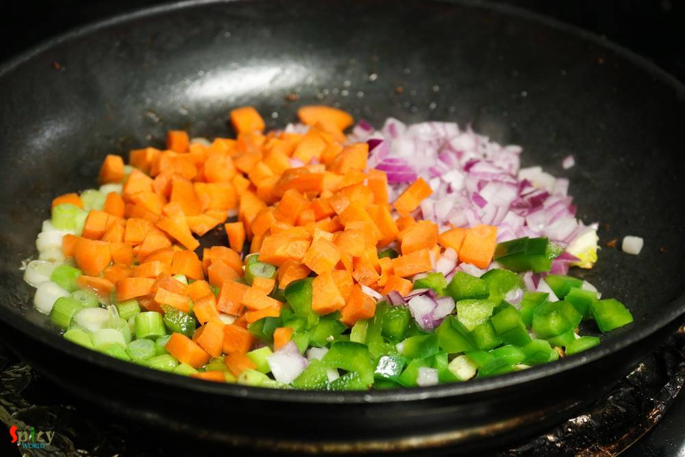

Simple and Easy Recipes
Chicken Fried Rice
© 2016 Spicy World, Published on: Apr 17, 2018
Fried rice is everybody's favourite .. agree or not ? You can add whatever ingredient you have in your fridge and thats what happened with me. I had few veggies laying around, so thought why not throw everything with some rice. Best part of this idea - added some chicken strips. After around 10 minutes of stir frying a good wholesome Chicken fried rice was waiting for me to make my soul and tummy happy. Now coming to the recipe, always use precooked, cold rice for this recipe and marinate the chicken strips in this way will provide the juiciest chicken pieces in your humble fried rice.

Ingredients
- Half cup of chicken strips.
- A cup of julienned cut vegetables of your choice.
- 3 medium sized bowls of precooked and cold rice.
- 3 Teaspoons of soy sauce.
- 2 Teaspoons of white / black pepper powder.
- Salt and sugar.
- 2 Teaspoons of vinegar.
- Half Teaspoon of ginger and garlic paste.
- 2 cloves of garlic, finely chopped.
- 4 green chilles, chopped.
- 3 Tablespoons of white part of green onions, chopped.
- 2 Tablespoons of green part of green onions, chopped.
- 2 Teaspoons of sesame oil.
- 2 Tablespoons of white oil.
- Drinking water.


Steps
Marinate the chicken strips atleast an hour with a Teaspoon of soy sauce, vinegar, pepper powder, pinch of salt, ginger garlic paste, some plain drinking water and a pinch of sugar.
Heat the white oil in a wok or flat pan.
Fry the chicken strips with half of the marination for exactly 3 minute on high flame. Then remove them from the pan.
Heat the remaining oil.
Saute chopped garlic for 30 seconds.
Add the white part of green onion and the vegetables. I have used onion, green bellpepper, carrot, green beans and mushrooms.
I have added mushrooms few minutes later.
After frying them for 3 - 4 minutes add the mushrooms and a big pinch of salt. Fry for another 2 minutes.
Now add the cooked chicken strips and give everything a good mix for 2 minutes.
Add the cold rice, pepper powder, soy sauce and some more salt. Stir fry them on medium flame for 3 minutes.
Always boil the rice in salted water, that way the seasoning of the fried rice will be perfect.
Turn off the heat. Lastly add the sesame oil and green part of the green onion. Mix well and serve immediately.
Your chicken fried rice is ready.
Serve it hot on its own or pair it with any manchurian gravy.
")